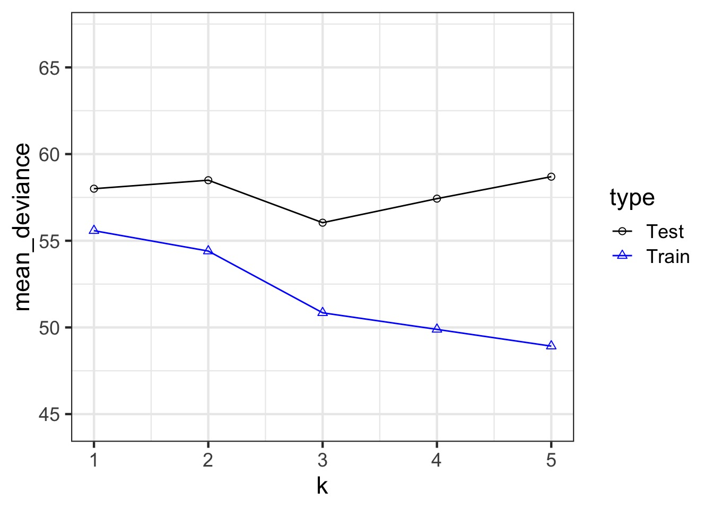

Information Theoretic Approaches to Model Selection
What causes species richness?
- Distance from fire patch
- Elevation
- Abiotic index
- Patch age
- Patch heterogeneity
- Severity of last fire
- Plant cover
We could build a full model…
Consider this data…
Underfitting
We have explained nothing!
Overfitting
We have perfectly explained this sample
What is the right fit?
How complex a model do you need to be useful?
Some models are simple but good enough
More Complex Models are Not Always Better or Right
How do we Navigate Between Scylla and Charybdis?
- Regularization
- Penalize parameters with weak support
- Penalize parameters with weak support
- Optimization for Prediction
- Information Theory
- Draws from comparison of information loss
- Information Theory
Model Selection in a Nutshell
- The Frequentist P-Value testing framework emphasizes the evaluation of a single hypothesis - the null. We evaluate whether we reject the null.
- This is perfect for an experiment where we are evaluating clean causal links, or testing for a a predicted relationship in data.
- Often, though, we have multiple non-nested hypotheses, and wish to evaluate each. To do so we need a framework to compare the relative amount of information contained in each model and select the best model or models. We can then evaluate the individual parameters.
In and Out of Sample Deviance
In and Out of Sample Deviance
Prediction: 806.8141456, Observe: 515
Deviance: 8.526583810^{4}
Prediction: A Goal for Judging Models
- Can we minimize the out of sample deviance?
- So, fit a model, and evaluate how different the deviance is for a training versus test data set is
- This is called CROSS-VALIDATION
In and Out of Sample Deviance

A Criteria Estimating Test Sample Deviance
- We don’t always have enough data for a “test” dataset
- What if we could estimate out of sample deviance?
- The difference between training and testing deviance shows overfitting
What’s the difference between train and test deviance?
Slope of 1.87 (~2)
Enter the AIC
- So, \(E[D_{test}] = D_{train} + 2K\)
- This is Akaike’s Information Criteria (AIC)
\[AIC = Deviance + 2K\]
Suppose this is the Truth
We Can Fit a Model To Descibe Our Data, but it Has Less Information
We Can Fit a Model To Descibe Our Data, but it Has Less Information
Information Loss and Kullback-Leibler Divergence
Information Loss(truth,modeli) = \(\mathscr{L}_{truth}log\frac{\mathscr{L}_{truth}}{\mathscr{L}_{model \thinspace i}}\)
Two neat properties:
Comparing Information Loss between model1 and model2, truth drops out as a constant!
We can therefore define a metric to compare Relative Information Loss
Defining an Information Criterion
Akaike’s Information Criterion - lower AIC means less information is lost by a model
\[AIC = -2log(L(\theta | x)) + 2K\]
Balancing General and Specific Truths
Which model better describes a general principle of how the world works?
How many parameters does it take to draw an elephant?
AIC
- AIC optimized for forecasting (out of sample deviance)
- Assumes large N relative to K
- AICc for a correction
- AICc for a correction
But Sample Size Can Influence Fit…
\[AIC = -2log(L(\theta | x)) + 2K\]
\[AICc = AIC + \frac{2K(K+1)}{n-K-1}K\]
AIC v. BIC
Many other IC metrics for particular cases that deal with model complexity in different ways. For example \[AIC = -2log(L(\theta | x)) + 2K\]
Lowest AIC = Best Model for Predicting New Data
Tends to select models with many parameters
\[BIC = -2log(L(\theta | x)) + K ln(n)\]
Lowest BIC = Closest to “Truth”"
- Derived from posterior probabilities
How can we Use AIC Values?
\[\Delta AIC = AIC_{i} - min(AIC)\]Rules of Thumb from Burnham and Anderson(2002):
- \(\Delta\) AIC \(<\) 2 implies that two models are similar in their fit to the data
- \(\Delta\) AIC between 3 and 7 indicate moderate, but less, support for retaining a model
- \(\Delta\) AIC \(>\) 10 indicates that the model is very unlikely
What causes species richness?
- Distance from fire patch
- Elevation
- Abiotic index
- Patch age
- Patch heterogeneity
- Severity of last fire
- Plant cover
Many Things may Influence Species Richness
Implementing AIC: Create Models
Implementing AIC: Compare Models
[1] 722.2085[1] 736.0338[1] 738.796What if You Have a LOT of Potential Drivers?
7 models alone with 1 term each
127 possible without interactions.
A Quantitative Measure of Relative Support
\[w_{i} = \frac{e^{-\Delta_{i}/2 }}{\displaystyle \sum^R_{r=1} e^{-\Delta_{i}/2 }}\]
Where \(w_{i}\) is the relative support for model i compared to other models in the set being considered.
Model weights summed together = 1
Begin with a Full Model
We use this model as a jumping off point, and construct a series of nested models with subsets of the variables.
Evaluate using AICc Weights!
Models with groups of variables
One Factor Models
Null Model
Now Compare Models Weights
| Modnames | K | AICc | Delta_AICc | ModelLik | AICcWt | LL | |
|---|---|---|---|---|---|---|---|
| 1 | full | 9 | 688.162 | 0.000 | 1.000 | 0.888 | -333.956 |
| 3 | soil_fire | 7 | 692.554 | 4.392 | 0.111 | 0.099 | -338.594 |
| 4 | soil_plant | 7 | 696.569 | 8.406 | 0.015 | 0.013 | -340.601 |
| 7 | fire | 4 | 707.493 | 19.331 | 0.000 | 0.000 | -349.511 |
| 2 | plant_fire | 6 | 709.688 | 21.526 | 0.000 | 0.000 | -348.338 |
| 5 | soil | 5 | 711.726 | 23.564 | 0.000 | 0.000 | -350.506 |
| 6 | plant | 4 | 737.163 | 49.001 | 0.000 | 0.000 | -364.346 |
| 8 | null | 2 | 747.254 | 59.092 | 0.000 | 0.000 | -371.558 |
So, I have some sense of good models? What now?

Variable Weights
How to I evaluate the importance of a variable?
Variable Weight = sum of all weights of all models including a variable. Relative support for inclusion of parameter in models.
Importance values of 'firesev':
w+ (models including parameter): 0.99
w- (models excluding parameter): 0.01

Model Averaged Parameters
\[\hat{\bar{\beta}} = \frac{\sum w_{i}\hat\beta_{i}}{\sum{w_i}}\]
\[var(\hat{\bar{\beta}}) = \left [ w_{i} \sqrt{var(\hat\beta_{i}) + (\hat\beta_{i}-\hat{\bar{\beta_{i}}})^2} \right ]^2\]
Buckland et al. 1997
Model Averaged Parameters
Multimodel inference on "firesev" based on AICc
AICc table used to obtain model-averaged estimate with shrinkage:
K AICc Delta_AICc AICcWt Estimate SE
full 9 688.16 0.00 0.89 -1.02 0.80
plant_fire 6 709.69 21.53 0.00 -1.39 0.92
soil_fire 7 692.55 4.39 0.10 -1.89 0.73
soil_plant 7 696.57 8.41 0.01 0.00 0.00
soil 5 711.73 23.56 0.00 0.00 0.00
plant 4 737.16 49.00 0.00 0.00 0.00
fire 4 707.49 19.33 0.00 -2.03 0.80
null 2 747.25 59.09 0.00 0.00 0.00
Model-averaged estimate with shrinkage: -1.09
Unconditional SE: 0.84
95% Unconditional confidence interval: -2.74, 0.56
Model Averaged Predictions
newData <- data.frame(distance = 50,
elev = 400,
abiotic = 48,
age = 2,
hetero = 0.5,
firesev = 10,
cover=0.4)
Model-averaged predictions on the response scale
based on entire model set and 95% confidence interval:
mod.avg.pred uncond.se lower.CL upper.CL
1 31.666 6.136 19.64 43.692Death to single models!
- While sometimes the model you should use is clear, more often it is not
- Further, you made those models for a reason: you suspect those terms are important
- Better to look at coefficients across models
- For actual predictions, ensemble predictions provide real uncertainty
Ensemble Prediction
- Ensemble prediction gives us better uncertainty estimates
- Takes relative weights of predictions into account
- Takes weights of coefficients into account
- Basicaly, get simulated predicted values, multiply them by model weight
What about IC Analyses in Bayes?
Can we just use AIC?
- We do estimate the posterior distribution of the deviance
- Average of the posterior, \(\bar{D}\) is our \(D_{train}\)
- But what about # of parameters?
- With flat priors, it’s just the # of params!
- But once priors are not flat, we are using additional information
- It is as if we have fewer parameters to estimate, so AIC becomes problematic
- With flat priors, it’s just the # of params!
So how do we maximize prediction?
- Why not look at the pieces that make up the deviance
- The pointwise predictive power of the posterior
- The pointwise predictive power of the posterior
- We can define the Pr(yi | posterior simulations)
- This tells us the distribution of the predictive power of our posterior for each point
- This tells us the distribution of the predictive power of our posterior for each point
- \(llpd = \sum log Pr(y_i | \theta)\)
But what about Parameters?
- We know that as k increases, our uncertainty in coefficients increases
- And priors shrink uncertainty when good
- And priors shrink uncertainty when good
- Uncertainty is reflected in the distribution of Pr(yi | simulations)
- Thus, this variance gives us an effective penalty term
- \(p_{waic} = \sum Var(log Pr(y_i | \theta))\)
Widely Applicable IC
\[WAIC = -2 \sum log Pr(y_i | \theta) + 2 \sum Var(log Pr(y_i | \theta))\]\[= -2 llpd + 2 p_{waic}\]
WAIC with Cover Only Model
Computed from 4000 by 90 log-likelihood matrix
Estimate SE
elpd_waic -369.2 5.1
p_waic 2.5 0.4
waic 738.4 10.1WAIC Across All Models
| Model | WAIC | SE |
|---|---|---|
| keeley_full_brm | 686.48 | 12.72 |
| keeley_soil_fire_brm | 691.37 | 14.51 |
| keeley_soil_plant_brm | 695.52 | 11.96 |
| keeley_fire_brm | 707.00 | 13.18 |
| keeley_plant_fire_brm | 708.61 | 12.88 |
| keeley_soil_brm | 711.24 | 13.65 |
| k_abiotic_brm | 722.22 | 14.52 |
| k_firesev_brm | 735.78 | 9.87 |
| keeley_plant_brm | 735.94 | 9.37 |
| k_cover_brm | 738.43 | 10.11 |
| keeley_null_brm | 746.91 | 10.66 |
We Can Weight
| Model | WAIC | SE | delta_waic | weight |
|---|---|---|---|---|
| keeley_full_brm | 686.48 | 12.72 | 0.00 | 0.91 |
| keeley_soil_fire_brm | 691.37 | 14.51 | 4.89 | 0.08 |
| keeley_soil_plant_brm | 695.52 | 11.96 | 9.04 | 0.01 |
| keeley_fire_brm | 707.00 | 13.18 | 20.52 | 0.00 |
| keeley_plant_fire_brm | 708.61 | 12.88 | 22.13 | 0.00 |
| keeley_soil_brm | 711.24 | 13.65 | 24.76 | 0.00 |
| k_abiotic_brm | 722.22 | 14.52 | 35.74 | 0.00 |
| k_firesev_brm | 735.78 | 9.87 | 49.30 | 0.00 |
| keeley_plant_brm | 735.94 | 9.37 | 49.46 | 0.00 |
| k_cover_brm | 738.43 | 10.11 | 51.95 | 0.00 |
| keeley_null_brm | 746.91 | 10.66 | 60.43 | 0.00 |
The Futility of Model Selection in a Bayesian World
| Model | WAIC | SE |
|---|---|---|
| keeley_full_brm - keeley_soil_fire_brm | -4.89 | 5.71 |
| keeley_full_brm - keeley_soil_plant_brm | -9.04 | 7.15 |
| keeley_full_brm - keeley_fire_brm | -20.52 | 8.98 |
| keeley_full_brm - keeley_plant_fire_brm | -22.13 | 8.83 |
| keeley_full_brm - keeley_soil_brm | -24.76 | 9.61 |
| k_abiotic_brm - keeley_full_brm | 35.74 | 11.31 |
| k_firesev_brm - keeley_full_brm | 49.30 | 12.34 |
| keeley_full_brm - keeley_plant_brm | -49.46 | 12.21 |
| k_cover_brm - keeley_full_brm | 51.95 | 13.08 |
| keeley_full_brm - keeley_null_brm | -60.43 | 13.60 |
Are these really different?
The Futility of Model Selection in a Bayesian World
# A tibble: 55 x 3
Model WAIC SE
<chr> <dbl> <dbl>
1 k_abiotic_brm - k_cover_brm -16.2 12.2
2 k_abiotic_brm - k_firesev_brm -13.6 11.6
3 k_abiotic_brm - keeley_full_brm 35.7 11.3
4 k_abiotic_brm - keeley_soil_fire_brm 30.8 10.5
5 k_abiotic_brm - keeley_plant_fire_brm 13.6 12.4
6 k_abiotic_brm - keeley_soil_plant_brm 26.7 9.70
7 k_abiotic_brm - keeley_soil_brm 11.0 6.28
8 k_abiotic_brm - keeley_fire_brm 15.2 11.7
9 k_abiotic_brm - keeley_plant_brm -13.7 11.9
10 k_abiotic_brm - keeley_null_brm -24.7 10.2
# ... with 45 more rowsMaybe average coefficients?
Model Averaged Coefficients
Model Averaged Coefficients
- Draw values from posterior of each model with frequency porportional to model weight
| term | estimate | std.error | conf.low | conf.high |
|---|---|---|---|---|
| Averaged_Hetero | 44.02312 | 11.45751 | 22.84430 | 67.73754 |
| Full_Model_Hetero | 44.60816 | 11.11284 | 24.09043 | 67.73754 |
Embracing Full Uncertainty
- Current controversy over meaning of coefficient weights (even with AIC)
- In a Bayesian worldview, we want to embrace uncertainty!
- Look at weighted predictions over all models
- Weights determine probability of drawing from a model’s posterior
- Look at weighted predictions over all models
- So, ensemble predictions marginalizing over variables not of interest
Ensemble Predictions
Final Notes
- IC analyses aid in model selection. One must still evaluate parameters and parameter error.
- Your inferences are constrained solely to the range of models you consider. You may have missed the ’best’ model.
- All inferences MUST be based on a priori models. Post-hoc model dredging could result in an erroneous ’best’ model suited to your unique data set.
- Ensemble predictions are a powerful practice to show true unertainty